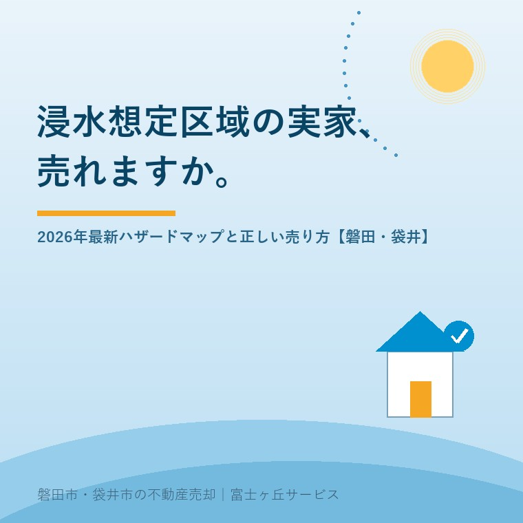

2026年7月29日｜カテゴリ：地域・防災・売却の実務

この記事の要点
Q. ハザードマップを見たら、磐田の実家が浸水想定区域だった。もう売れない？
A. 浸水想定区域でも、実家の売買は普通に行われています。2020年から不動産取引ではハザードマップを使った水害リスクの説明が義務になっており、隠して売ることはそもそもできない仕組みです。だからこそ、売主側も最新のマップと過去の浸水履歴を先に把握し、正しく説明して売るのが一番の近道です。磐田市・袋井市・森町では、介護施設の運営から不動産事業を始めた富士ヶ丘サービスのような地域密着の会社に、水害リスクの確認も含めて売却を相談するという選択肢があります。
台風・大雨のニュースが続くこの季節、「実家のあたり、ハザードマップだと色が付いているんです。売れるんでしょうか」というご相談が増えます。天竜川と太田川水系を抱える磐田市・袋井市では、平野部の多くが何らかの浸水想定に含まれており、これは決して特別なことではありません。今日は、2026年に更新された両市の最新ハザードマップの話と、「浸水想定区域の実家を正しく売る」ための実務を解説します。
まず知っておきたいのが、両市のハザードマップがこの1年で更新されていることです。
| 市 | 最新の動き |
|---|---|
| 磐田市 | 2026年1月から「磐田市地図情報提供サービス」でデジタルハザードマップの提供を開始。天竜川（下流）・太田川水系などの洪水浸水想定を住所検索で確認できる |
| 袋井市 | 2026年4月に「袋井市浸水ハザードマップ」を作成。太田川・弁財天川・前川水系の洪水に加え、内水（排水が追いつかない浸水）のマップも収録 |
ポイントは、想定は「更新される」ということです。何年も前の紙のマップの記憶で「うちは大丈夫」「うちはダメ」と思い込まず、まず最新版で実家の場所を確認することが出発点です。デジタルマップなら、遠方にお住まいでもスマホで住所を入れるだけで確認できます。
不動産の売買では、契約前に宅地建物取引士が「重要事項説明」を行います。2020年8月28日施行の宅建業法施行規則の改正で、この重要事項説明に「水害ハザードマップにおける対象物件の所在地」の説明が追加されました。売買でも賃貸でも、ハザードマップを提示して物件のおおよその位置を示すことが義務です。
つまり、「浸水想定のことは黙って売る」という選択肢は、制度上ありません。これは売主にとって不利な話に聞こえるかもしれませんが、逆です。買主は必ず説明を受けるのですから、売主が先にリスクを把握し、備えとセットで誠実に開示するほうが、交渉も取引もスムーズに進みます。後から「聞いていなかった」となるトラブルこそ、売主が一番避けるべきものです。
なお、この水害ハザードマップの説明義務が対象にしているのは洪水・雨水出水・高潮で、津波は含まれません。磐田市は津波災害警戒区域が未指定のため、津波については条文上の説明義務そのものが生じない状態です。この違いと、それでも福田・竜洋の実家で何を説明するかは津波災害警戒区域、磐田市は未指定──重要事項説明で何が変わるかに整理しました。
結論として、売れます。理由は3つあります。
価格への影響はゼロとは言いませんが、それは「浸水想定区域だから」ではなく、浸水深・立地・建物の状態の総合評価です。むしろ実務で困るのは、過去に床下浸水があったのに記録も記憶も曖昧というケース。過去の浸水被害は買主への告知事項なので、親御さんが元気なうちに「この家、水が入ったことある？」を聞いておくことが、将来の売却の大きな助けになります。
当社のふじがおか実家カルテでは、机上調査の段階でハザードマップ上の位置づけも確認し、売却時に説明すべきポイントとして整理してお渡ししています。介護施設の運営から始まった会社なので、「親が施設に入って空いた実家、水の心配もあるし早めに整理したい」というご相談も、介護と不動産をひとつのテーブルでお受けできます。
富士ヶ丘サービスは、磐田市・袋井市に特化した地域密着の会社として、水害リスクも含めて「買う人が安心でき、売る家族が後ろめたくない売却」を大切にしています。ハザードマップの見方から売却の段取りまで、実家じまい相談室でお気軽にご相談ください。
ふじがおか実家カルテ｜水害リスクの位置づけも机上調査でご確認
ハザード・名義・道路・売りやすさ。売る前に、まず1冊に。
登記情報と固定資産税通知書、最新ハザードマップから、売却時に説明すべきポイントを宅建士が整理してお渡しします。遠方の方もオンライン・郵送で完結できます。
本記事は2026年7月29日時点の情報をもとに作成しています。ハザードマップの内容・提供方法は更新されることがあります。最新の浸水想定は磐田市・袋井市の公式サイトで、重要事項説明の個別の内容は取引を担当する宅地建物取引士にご確認ください。

この記事を書いた人：大石浩之（宅地建物取引士）
磐田市・袋井市・森町で「介護×相続×空き家」に特化した不動産売却支援を行う富士ヶ丘サービスの代表取締役・宅地建物取引士。介護施設の運営から不動産事業を始めた経験をもとに、売主とご家族が困らない売却を一件ずつお手伝いしています。プロフィール
磐田市・袋井市・森町の実家じまい・相続空き家相談
固定資産税通知書だけでも相談できます
住所があいまいでも、通知書や写真から名義・道路・農地・残置物の確認順を整理します。カルテ申込またはLINEで状況を送ってください。
富士ヶ丘サービス株式会社／静岡県磐田市見付5789番地1／TEL:0538-31-3308／静岡県知事 (2) 第14083号／代表取締役・宅地建物取引士 大石 浩之